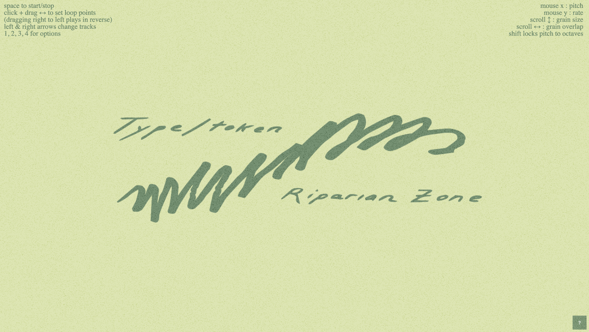

matt nelson is a musician, creative technologist, and educator, based in Oakland, California. His work explores the intersection of hardware and software processes through the creation of experimental ambient compositions and bespoke audio apps. As an “untrained” musician, his practice is driven by a critical curiosity and attunement to the material/sonic environment, rather than music theory. To support this practice, he creates opinionated and unpredictable software tools that reward hands-on exploration and discovery. Inspired by the idea of embodied cognition, he sees interactions with these technologies as their own way of thinking, not simply as a means for translating preformed ideas into sonic output. As a teacher, he has shared his playful approach to technology with artists, incarcerated coders, and middle school students. His music has appeared in physical and digital formats on the Maine-based label and press Traced Objects.